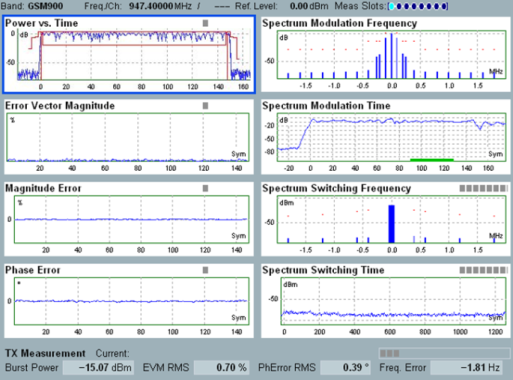

Using Offline Mode
| ► | Select segment no. 2 for a calculation of the complete measurement results. Calculate the results in segment no. 2. Go to local. CONFigure:GSM:MEAS:MEValuation:LIST:OSINdex 2 INIT:GSM:MEAS:MEValuation >L The results are displayed as follows: |

GSM list mode in offline mode